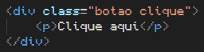
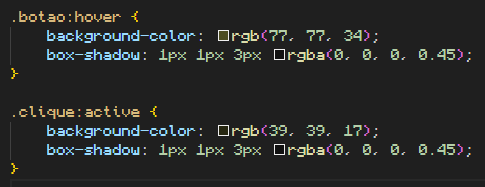
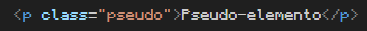
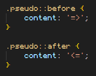

Mais seletores
Pseudo-class
As pseudo classes são estilos que só vão aparecer condicionalmente, de acordo com o estado do conteúdo (tag).
Sabemos que as classes são representadas no CSS por .
As pseudo-classes serão representadas por :
O estado do conteúdo é digitado logo após a declaração :
Estados
Hover: o estado hover só irá ativar o estilo quando o cursor estiver no mesmo espaço que o elemento.
Passe o cursor aqui
Código HTML do exemplo:
Código CSS do exemplo:
Active: o estado active adicionará um estilo diferente quando o elemento receber um clique.
Clique aqui
Código HTML do exemplo:
Código CSS do exemplo:
Visited: o estado visited adicionará um estilo diferente quando o site do link já estiver sido visitado alguma vez nesse computador.
Pseudo-elemento
Os pseudo-elementos são estilos que imitam a função de elementos, como por exemplo, adicionar texto.
Pseudo-classes são representadas no CSS por :
Os pseudo-elementos são representados no CSS por ::
Exemplo de uso:
Pseudo-elemento
Veja que as setas não são selecionáveis e não contam como texto.
Código HTML do exemplo:
Código CSS do exemplo:
